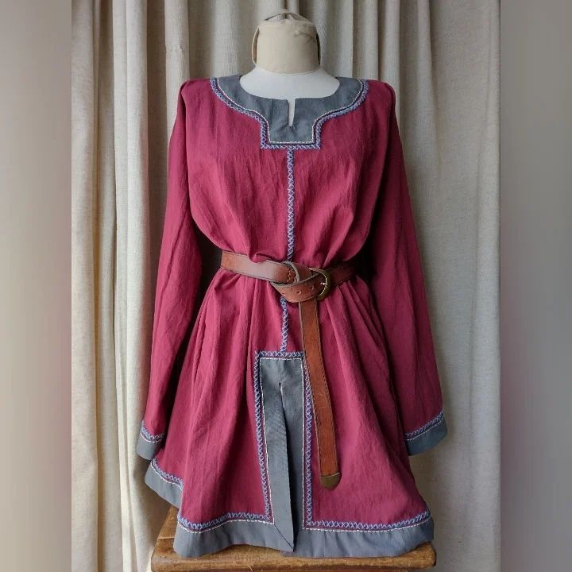
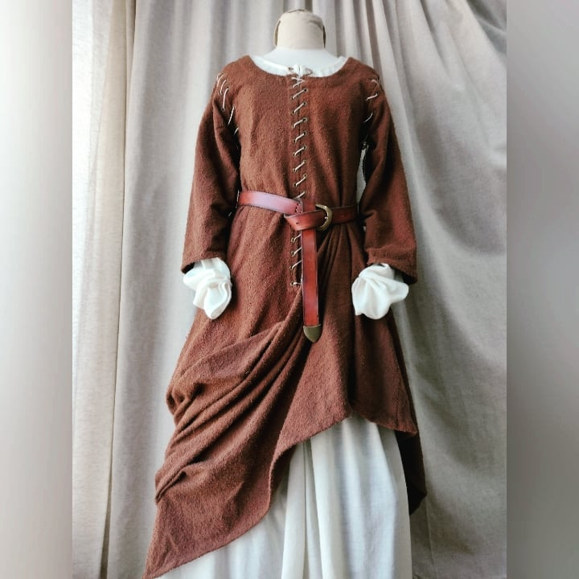

Atavio Medieval:
Vesta de Knigth Marshall
Atavio realizado para la representacion de los Knight Marshall(Una especie de arbitros) en los combates de HMB (Historical Medieval Battles)
Cada Marshall dentro de la liza de combate lleva como insignia , franjas negras como muestra de su rango .
En Heraldica el Amarillo simbolizala nobleza y el sable (negro) la prudencia
Leer más...
Atavio Medieval:
Tunica Lombarda
El Pueblo de los Lombardos , migró desde escandinavia hacia la peninsula Italica en el siglo V ,
absorviendo las ciudades del antiguo Imperio Romano del cual se inspiraron para sus vestimentas.
La prenda esta realizada en un fino Lino con bordados hechos a mano en lana, detalles teñidos en cebolla
Leer más...

Atavio Medieval:
Tunica Escandinava
El pueblo escandinavo, compuesto por las actuales Suecia, Noruega , Dinamarca , irrumpieron en la europa continental en el Siglo VII
vestian en distintos colores acorde a las diferentes verduras de las cuales
obtenian el tinte como la cebolla por ejemplo.
La Tunica fue confeccionada en Lino con bordados en lana hechos a mano
Leer más...

Atavio Medieval:
Camisola Europea de cortesana
Los colores apagados eran comunes en los estratos sociales bajos en la europa medieval del siglo X-XII , colores como el azul,
de dificil extraccion por ese entonces, pertenecian a la clase alta,
siendo pocos los privilegiados, aun asi ,los bordados a mano marcaban una diferencia para una Europa que venia atrasada tecnologiamente
Leer más...